P3: Paper Prototype Implentation and Testing
Prototype Photos
Click to Enlarge:
Tracking Data
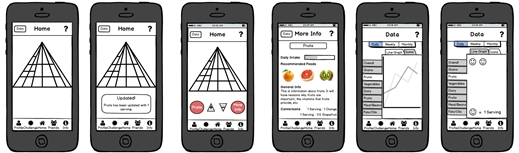
Challenging Friends
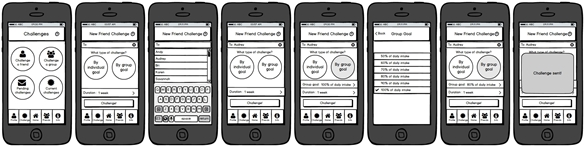
Personal Goals
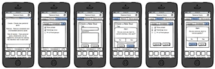
Briefing
Nutrition, specifically whether or not our bodies are obtaining the necessary nourishment, can be a daunting topic. People often do not keep track of what they eat and/or have a limited knowledge of the food groups and how this translates into daily consumption. This can be especially difficult for those who are considering switching diets since they would have to synthesize information from different sources to overcome this knowledge barrier and apply this to limiting meal plans, like the ones provided by colleges. Battle of the Plates is a web app aiming to promote and maintain healthier eating on the Wellesley campus. We hope to reach this goal with three features, which you will be testing:
- Tracking Data - Users can record and track their own personal nutrition intake, then see daily/weekly/monthly trends in their intakes
- Challenging Friends - Users can send challenges to their friends to see who can keep up the longest streak of balanced eating
- Personal Goals - Users can set personal goals of healthy eating for themselves
The intended app users are Wellesley College students who live on campus and rely on campus culinary and retail centers for their meals. We will focus on the interactions between users, dining halls, and user diets.
This is a test of the usability and interface of our app and not of the tester. Testing the app is completely voluntary and you may stop testing at any time. Should you agree to the testing, the data will be collected and used to improve the interface of the app, but you will remain anonymous.
In the following testing, you will be given three different scenarios in which you will interact and test the aforementioned three features of the app: tracking data, challenging friends, and creating personal goals. In each scenario, you will be given a small list of tasks to test the usability of each feature. Again, you may stop testing at any time.
Thank you for your time and consideration!
Battle of the Plates Team
Scenario Tasks
Scenario One - Tracking Data
Sherry is a junior at Wellesley College who wants to keep track of their daily diet in order to eat healthier, but wants to focus more on her nutrition intake than calories. She decides to use the data tracking feature of Battle of Plates in order to keep track of her nutritional intake and food groups and also see trends in her eating habits over time.
Pretend you are Sherry and perform the following tasks:
- Update your daily intake for “Fruits” by 1 cup
- Look up more information on the “Fruits” food group on the app
Scenario Two - Challenging a Friend
Rita is a sophomore at Wellesley College who wants to start leading a healthier lifestyle. She wants to start eating a balanced diet filled with a variety of nutrients, but wants to be held more accountable. She uses the “Challenge” feature of Battle of Plates to challenge her friends and see who can eat the recommended daily intake of food groups everyday for the longest amount of days.
Pretend you are Rita and perform the following tasks:
- Send a new challenge to your friends Audrey and Zack that lasts for 2 weeks..
- You receive a notification that you have a pending challenge. Accept this challenge.
- You are now 6 days into the challenge with Rachel. Check the progress of your current challenge.
Scenario Three - Personal Goals
Patricia is a senior at Wellesley College who has recently decided to become vegan. Instead of immediately substituting all animal products in her meals, Patricia decides to take a gradual approach to slowly transition to a vegan diet. She downloads Battle of the Plates and uses for tracking. Unfortunately, she is struggling with keeping herself motivated and decides to use the app’s personal goals feature to make the transition less daunting.
Pretend you are Patricia and perform the following tasks:
- Create a new personal goal called “Soymilk for one week” with description “Substitute milk with soymilk for one week.”
- Create a second goal called “Alternative protein sources” with description “Substitute meat with alternatives for one meal.”
- View your new goals
- Mark the second goal complete
- View the description of the first goal
- Delete the first goal
- View completed goals
Observations
Pilot Users
We only had the time to test one pilot user in class, but she offered valuable feedback that echoed some of our concerns about our design and brought attention to other problems that we had overlooked
Pilot User 1:
Task 1: Inputting food servings
- Knew to stay on the Home screen
- Was confused by seeing both the Help button with the icon “?” on the top right corner, and the Info tab “i” on the bottom right corner
- Thought using the pyramid to visualize the food group data was outdated, suggested using the more recent food plate image
- At the main home screen, hesitated to click on a section of the pyramid
- Did not know which section of pyramid corresponded to what food group, relied on the colors of the section to guess
- Confused about how to input the number of servings, and how much pressing the “+” button incremented the servings by
- Clicked the “Data” button on the top left, not knowing what it would lead to
Task 2: Challenging a friend
- Went to Challenges icon, but contemplated going to the Friends icon
- Knew to click on the + to add friend names
- Didn’t understand what an individual goal vs. group goal meant → had to explain on the spot, but even our explanation of this feature confused her
- Was confused about what 80% of daily intake meant, and whether it meant overall recommended daily intake or 80% of every single type of food group
- Didn’t understand the task fully, and what a challenge was
Task 3: Personal goals
- Went to the Profile tab on the bottom
- Went to Create tab on bottom when told to create a new goal
- Was confused about seeing checkboxes and radiobuttons next to each other
- Did not like having to click a separate tab to remove a goal
- Thought when the alert popup came up, having the content from the main screen still visible in the background made the screen looked cluttered
Overall, the pilot testing identified several flaws in our design, especially during the first task of inputting the servings. Because inputting servings for each food group is a crucial part of our application, this initial testing forced us to rethink how to best visually convey the user’s data and how the user will input the number of servings.
Real Users
Real User 1:
Task 1: Inputting food servings
- Completed the task with ease
- Didn’t realize that she had to press the “Up” arrow twice since the task called for an update of 1 cup and the arrow increments by 0.5 cup.
- Didn't press help button, and reported that she didn't feel a need to when asked why she didn't press the button
Task 2: Challenging a friend
- User accidentally clicked on Friends tab at first, but quickly realized she was supposed to click on Challenges tab instead
- Performed the rest of the tasks with ease
- Asked what would happen if you declined on a request instead of accepting it
Task 3: Personal goals
- Had no trouble going from the home screen to the personal goals page, knowing easily that she had to go through Profile.
- Didn’t realize she had successfully created a challenge because there was no feedback provided
- Had trouble with deleting goals
- Tried to delete the task by pressing the big button again
- Tried to delete the task by clicking on the task itself
- Finally realized she was supposed to click on the minus next to the task
Real User 2:
Task 1: Inputting food servings
- Completed task with ease. User knew to press Fruits section, and press the + button twice to increment by 1 cup
- When asked to find more information about the Fruits food group, user initially pressed the info tab on the bottom
Task 2: Challenging a friend
- Took a few seconds to decide whether to go to the Challenges tab or the Friends tab, but eventually went to Challenges
- Created a challenge without hesitation
- At the duration screen, paused a bit after selecting because she forgot to go back
- Checked pending challenges and looked at challenge progress without hesitation
Task 3: Personal goals
- Hesitated at the Home screen, trying to figure out how to get to Personal Goals, but eventually went to the Profile tab
- Confused about how to view the description of a goal, thought that clicking the goal would simply bring up the check box
- Hesitated when choosing among the tabs All, Current, and Completed
Real User 3:
Task 1: Inputting food servings
- Pressed fruits
- Pressed + twice quickly
- For second task, initially confusing because “more info” close to the info nav bar
- Also less circles and use different shapes
- Did not press help button
Task 2: Challenging a friend
- Start from home – pressed challenge nav button
- Pressed create new challenge, then to selected friends then pressed return
- Pressed duration and selected two weeks
- Assumed if didn’t go back automatically would press the back button
- Went to pending challenges, accepted
- Last task: went back to challenges page current challenges then view progress
Task 3: Personal goals
- Creating goal: pressed profile (not really intuitive to have it in my profile because she views it as a “self challenge” : something in between my profile and challenge
- Added description normally
- Need message to confirm creation of task
- Viewing goals: went to “View & Update”
- Viewing description of first goal: initially went to current then stopped—perhaps the filters aren’t distinguishable enough?
- Contemplated pressing help but thought “I’m pretty sure I can figure it out” and did but how prevalent would this be with other users?
- Pressed first goal to expand description
- Marking goal complete: checked the box first then hit the minus button—used to android system.
- Says she would have figured it out upon seeing a check appear next to first goal
- Not intuitive—not familiar with the minus button of iOS (maybe not as apparent because not red; colors would definitely help)
- View completed goal: did not exit the remove mode and when to complete first
- Went to complete after pressing minus button again
- User suggested having pictures in the help screen
Prototype Iteration
We made changes to our design by identifying solutions to the usability problems we identified during the pilot testing.
Click to Enlarge:
Scenario 1
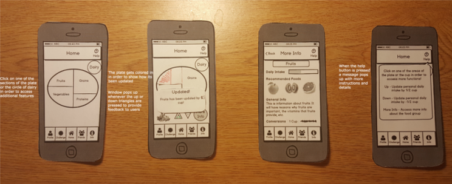
Tracking Data
- Problem 1: The pilot user was confused by our visualization of daily data through the utilization of the food pyramid, especially in regards to how much a serving represents. She was also unsure on which parts of the pyramid represents which food group.
- Solution: The pilot user added that there have been other ventures to shift from the food pyramid to a food plate by First Lady Michelle Obama. After looking through the food plate, we decided it was a more intuitive representation of nutrition tracking and switched over to the food plate. In order to make the food group clear, we also labelled them.
- Problem 2: The pilot user was unsure on how to increment the daily intake, and how much the arrows update by.
- Solution: We included explicit directions in the help screen to aid users who couldn’t figure out how to toggle the extra buttons. We also added “0.5” on the up and down arrow buttons to indicate how much the buttons increment by.
- Problem 3: The pilot user was confused as to what the data button did, whether it was data on the food groups or statistics.
- Solution: We renamed the button from “Data” to “Statistics” and then moved the button from the home page to the user profile page.
Scenario 2
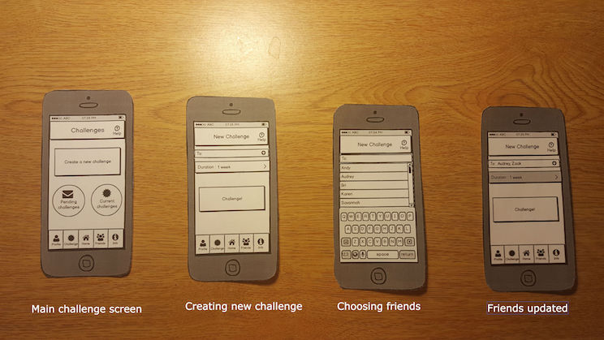
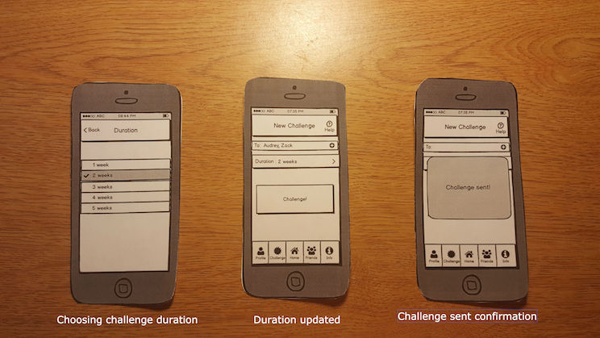
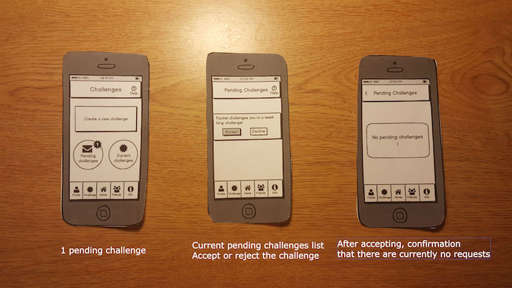
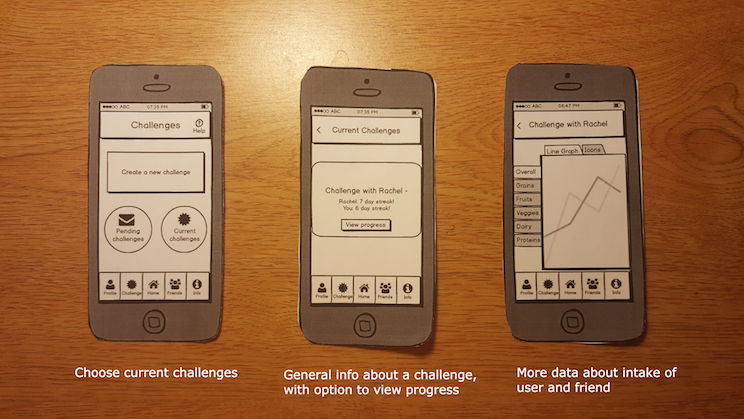
Challenging Friends
- Problem 1: The pilot user was confused about the difference between an “Individual challenge” and a “Group challenge.” For the group challenge, we originally had a feature where the user can customize how much percentage of the recommended intake the group must meet, thinking it allowed more customization and made it more user friendly towards people who want to gradually start eating a better diet.
- Solution 1: To simplify this crucial part of our app and avoid confusion among users, we got rid of the option to choose the challenge type and percentage of daily intake. For all challenges, users must reach 100% of daily recommended intake for all food groups.
- In addition, to further simplify our interface, we removed the separate buttons “Challenge a friend” and “Challenge a group” and created a single “Challenge button.” Instead of explicitly creating a difference between a group or friend challenge, the user will be able to add any number of friends to the challenge.
- In general, we added the tasks of accepting pending challenges and checking current challenge progress to our second design since they are important parts of the feature as well.
Scenario 3
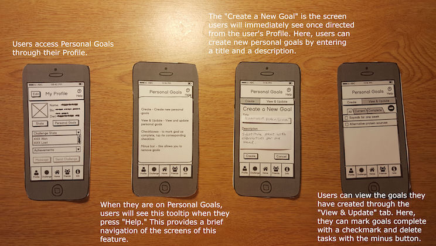
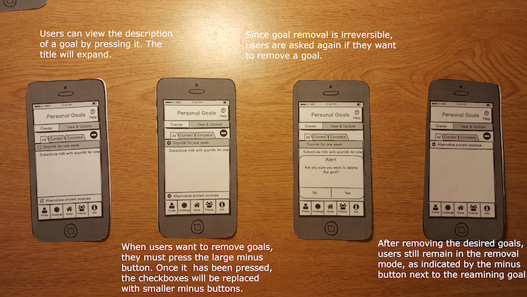
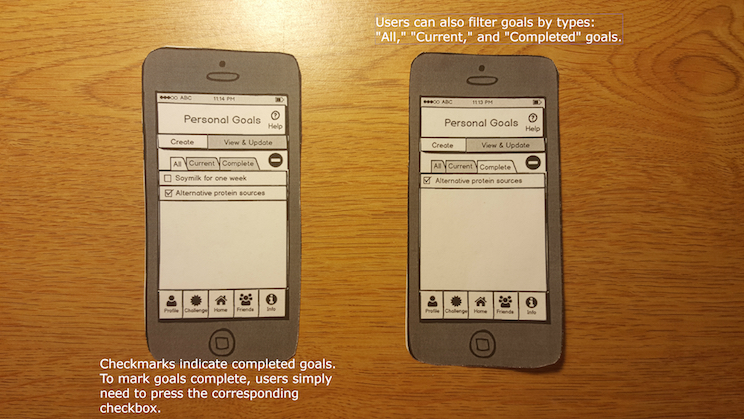
Personal Goals
- Problem 1: Having both radio buttons and checkboxes at the same time was confusing when the user wanted to delete a goal. Initially, we we wanted to have checkboxes present to distinguish completed challenges from current challenges and the radio buttons would only be visible when the user is on the “Remove” tab.
- Solution: We removed the Remove tab so that the two remaining tabs would be “Create” and “View & Update.” We added a minus button to indicate removal next to the “All,” “Current,” and “Completed” tabs that is only visible when the user is on the “View & Update” tab. When the user taps this, the checkboxes will be replaced by smaller minus buttons.
- Problem 2: The position of the alert message for removing a goal was confusing because, in addition to the “Yes” and “No” options of the message, the “Remove” and “Cancel” buttons of the Remove tab were still visible.
- Solution: Again, we removed the the “Remove” tab and avoided the use of remove buttons. Since the information visible when there was is an alert seems to greatly affect users, we decided to apply this to all other tasks making use of messages: when the user taps the help icon, the tooltip covers most of the screen and obscures irrelevant information; when the user cancels the creation of a new goal, there will be a blank screen behind the resulting alert; and when the user removes a goal, all minus buttons disappear.
Resolutions
During our second round of testing, we identified common usability problems among our users that we will need to address in our next design iteration. We proposed some solutions to these usability problems below.
Tracking Data
- Problem 1: When asked to look up more information on the “Fruits” food group, two of our non-pilot users hesitated to execute the task. Both users were confused about whether to press the Info tab on the bottom, or the More Info button directly on the page. This is likely due to the proximity of the two options, or the vague wording of the “More Info” button.
- Solution: We can change the wording of the current “More Info” button to be more specific (“More Info about Fruits”) and differentiate it from the “Info” tab on the button.
Challenging Friends
- Problem 1: When the users arrived at the duration screen to choose how long the new challenge would last, there was a pause after selecting the duration. They forgot to press the Back button, or expected the screen to automatically go back to the previous screen.
- Solution: When the user selects a duration, automatically switch back to the previous screen to avoid pauses. As a result, remove the Back button on the top left.
Personal Goals
- Problem 1: When users created new goals, there was no confirmation of the creation of the goal
- Solution: When users create new goals, have a message confirming the creation of the new goal
- Problem 2: Users had trouble finding the Personal Goals screen. One even stated that it was not intuitive to list it under My Profile since it seemed more like a “self challenge.”
- Solution a: Clearly communicate the and elaborate the Personal Goals feature via tooltips
- Solution b: Go with the “self challenge” comment and list it within Challenge
- Problem 3: Interface (specifically minus button) was not intuitive for Android user. Also did not know to press the minus button again to exit goal removal
- Solution: Replace the minus buttons with a button named “Remove” and rename the main minus button “Exit Remove” when user enters the removal mode
- Problem 4: One user was adamant about not clicking the help button.
- Solution: Structure tooltips within the screens and get rid of the help button
- Problem 5: Overall, the slowest task for users was removing goals.
- Solution: Make objects more distinguishable and simplify the screen by removing unnecessary elements. We could replace the checkboxes and make use of color coding: green goals are completed and red goals are current, incomplete goals.
- Problem 6: One user hesitated when trying to view the description of the goal. Since there is a checkbox icon next to the goal, they thought clicking on it would simply check or uncheck it.
- Solution: Instead of making the user click the goal to make the description show on the bottom, we can make the description already visible under the goal title. This is to minimize the amount of actions for the user.